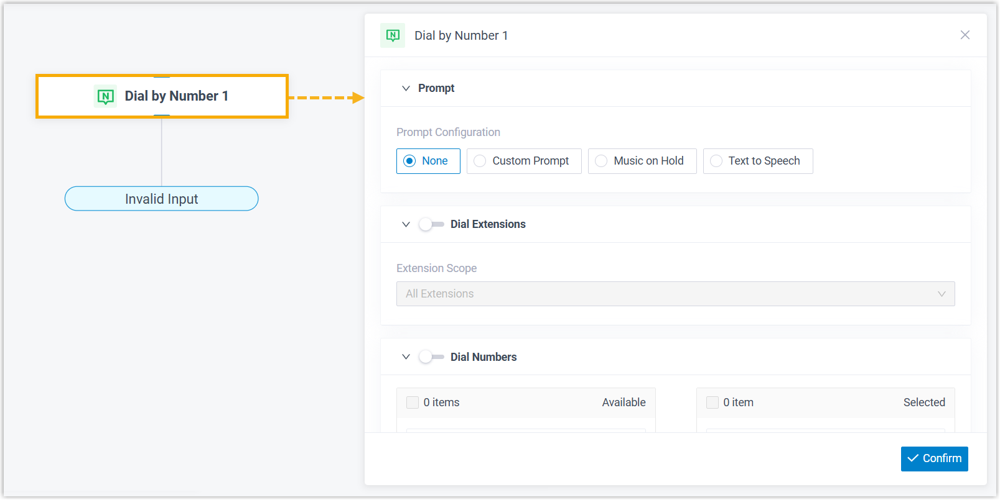
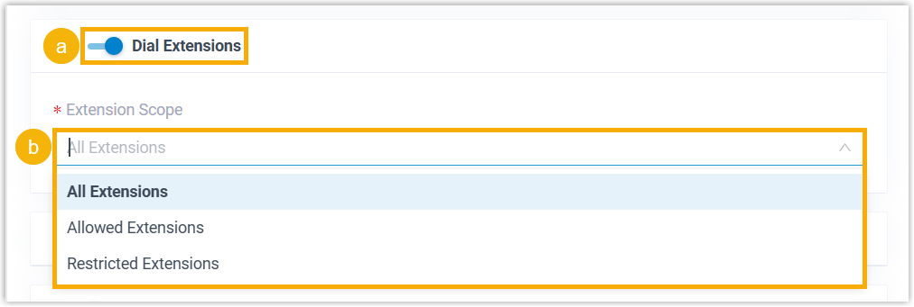
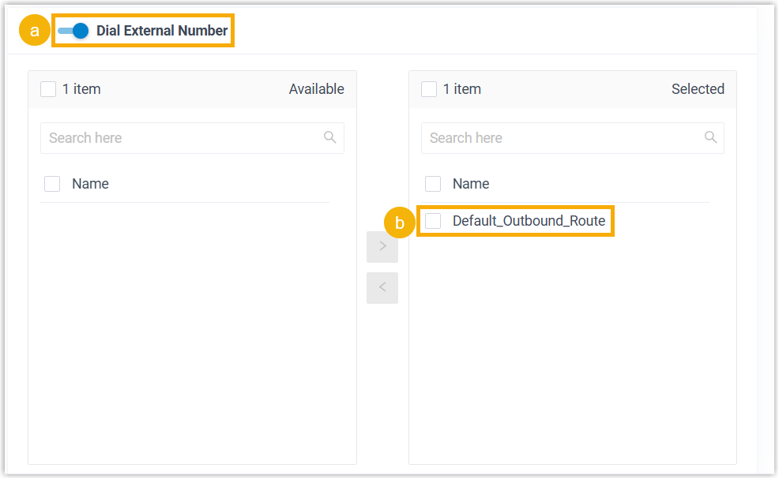
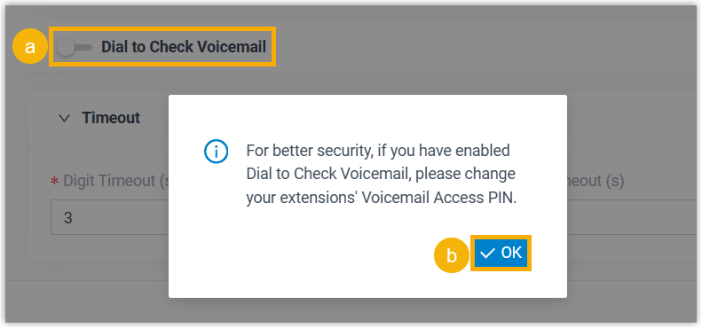
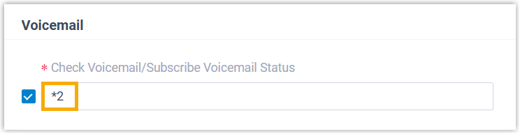
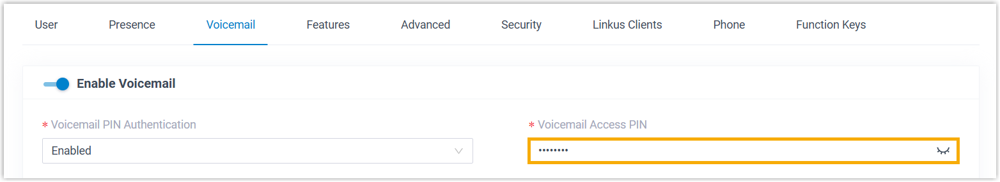
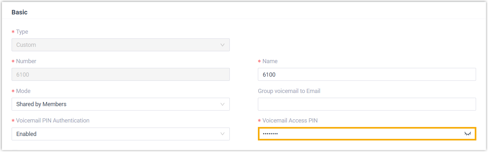
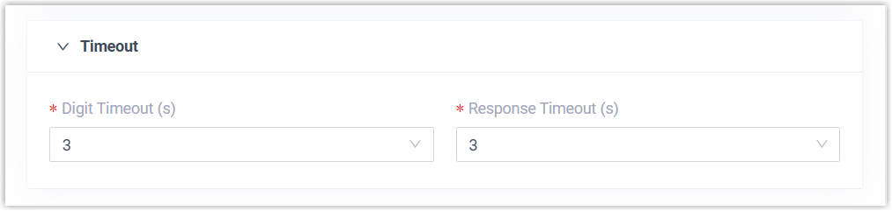
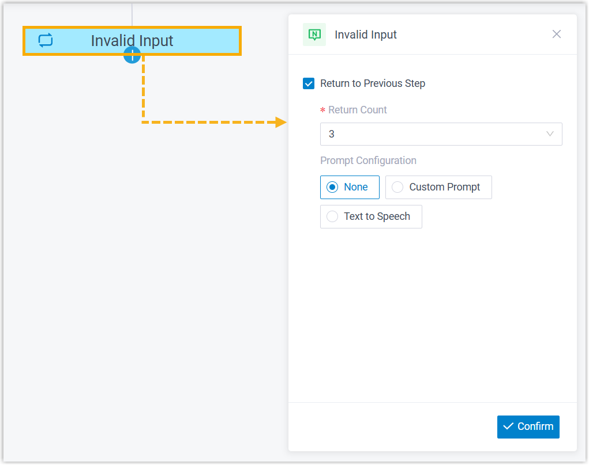

Dial by Number
This topic provides an overview of the Dial by Number component, and describes its configuration as well as supported component connections.
Component introduction
Dial by Number component allows callers to directly dial a number to reach the destination.- Supported destinations
-
- Extension
- Ring Group
- Queue
- Conference
- Call Flow
- Paging
- IVR
- External Number
- Check Voicemail (Extension Voicemail or Group Voicemail)
- Supported prompt types
-
Prompt Type Description Custom Prompt Choose from existing custom prompts, or create a new one by recording with an extension or uploading an audio file. Music on Hold (MoH) Choose from existing MoH. Note: Before you begin, make sure the desired MoH is configured in .
Text to Speech (TTS) Enter the desired text, which will be converted to speech in the selected language and voice style.
Note: Before you begin, make sure the Text-to-Speech feature is enabled in . - Supported end keys
#key or*key.
Component configuration
- Specify the numbers that callers can dial
-
- Click Dial by Number component to proceed
with the configuration.

- Configure audio prompt(s) or a text-to-speech message to instruct callers.
Item Instruction Custom Prompt 
- Click Custom Prompt.
- Specify custom prompt(s).Note: A maximum of 5 custom prompts is supported.
- To choose from an existing prompt, select it from the drop-down list of Prompt.
- To use a new prompt, click Record
New to record prompt with an
extension, or click Upload
to upload an audio file.Note: The new prompt will be saved in .
- Optional: To play the custom prompt in
a loop, select the checkbox of Enable
Loop Playback.Note: The looped prompt will be overridden if the next connected component is configured with a prompt.
Music on Hold 
- Select Music on Hold.
- Select an existing MoH from the drop-down list of Music on Hold.
Note: The MoH will be overridden if the next connected component is configured with a prompt.Text to Speech (TTS) 
- Select Text to Speech.
- Complete the rest of the configurations.Note: The new TTS message will be saved to the system and synchronized to .
- Specify the numbers that callers can dial upon reaching the component.
Item Instruction Dial Extensions 
- Turn on the switch of Dial Extensions.
- In the Extension Scope
drop-down list, select an option.
- All Extensions: Allow callers to dial all extensions.
- Allowed Extensions:
Allow callers to dial only specific
extensions.
If you choose this option, select the allowed extensions from Available box to Selected box.
- Restricted Extensions:
Allow callers to dial all extensions EXCEPT the
selected ones.
If you choose this option, select the restricted extensions from Available box to Selected box.
Dial Numbers 
- Turn on the switch of Dial Numbers.
- Select the desired numbers from Available box to Selected box.
Dial External Number 
- Turn on the switch of Dial External Number.
- Select the desired outbound routes from Available box to Selected box.
Dial to Check Voicemail 
- Turn on the switch of Dial to Check Voicemail.
- In the pop-up window, click
OK.
Extension users can access extension voicemail or group voicemail by dialing "Check Voicemail Feature Code + Extension Number/Group Voicemail Number", followed by the voicemail access PIN.
Note: To change the feature code or access PIN, proceed as follow:- Check Voicemail Feature Code: The
default feature code is
*2.To change it, go to .

- Extension Voicemail Access PIN: To
change the PIN, go to .

- Group Voicemail Access PIN: To change
the PIN, go to .

- Check Voicemail Feature Code: The
default feature code is
- Configure the timeout for user input.

- Digit Timeout(s): Set how long to
wait for the caller to enter the next digit.
You can select a value from the drop-down list, or enter a value between 1 and 9999.
- Response Timeout(s): Set how long to
wait for the caller to operate.
You can select a value from the drop-down list, or enter a value between 1 and 9999.
- Digit Timeout(s): Set how long to
wait for the caller to enter the next digit.
- Click Dial by Number component to proceed
with the configuration.
- Specify strategy for invalid input
-
- Click Invalid Input branch.

- Select the checkbox of Return to Previous Step.
- In the Return Count drop-down list, select how many times callers can return to the component upon invalid input.
- Optional: Configure audio prompt(s) or a text-to-speech message to instruct callers to retry dialing.
- Click Confirm.
- Click Invalid Input branch.
Component connections
Dial by Number component comes with a built-in Invalid Input branch, and the branch can be connected to one component, which can be any of the supported components.